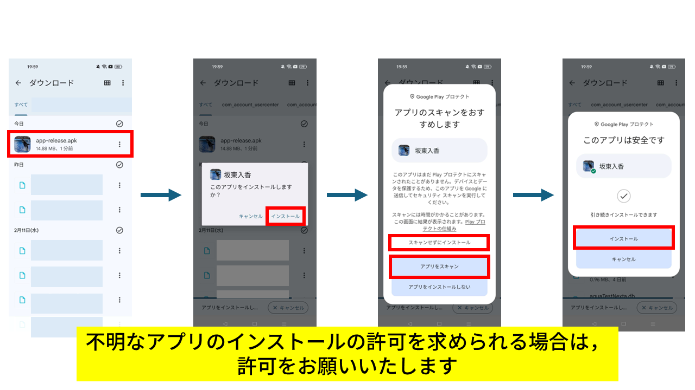
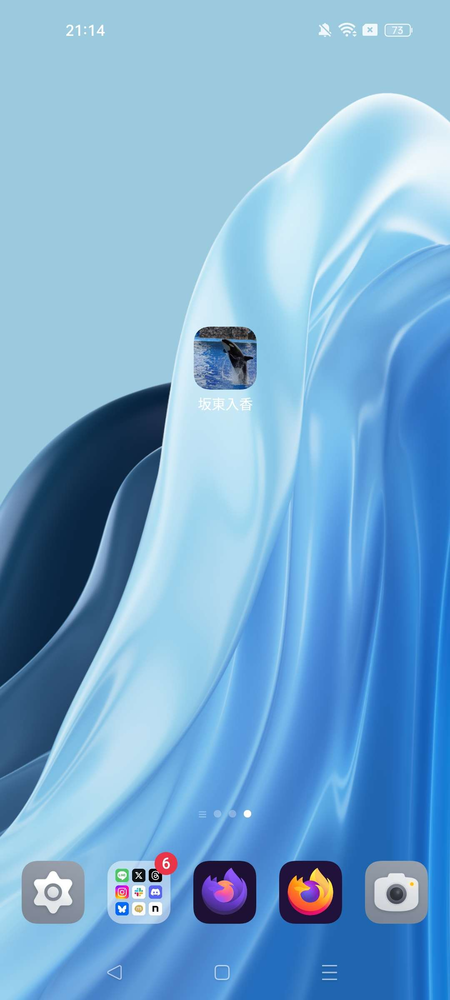
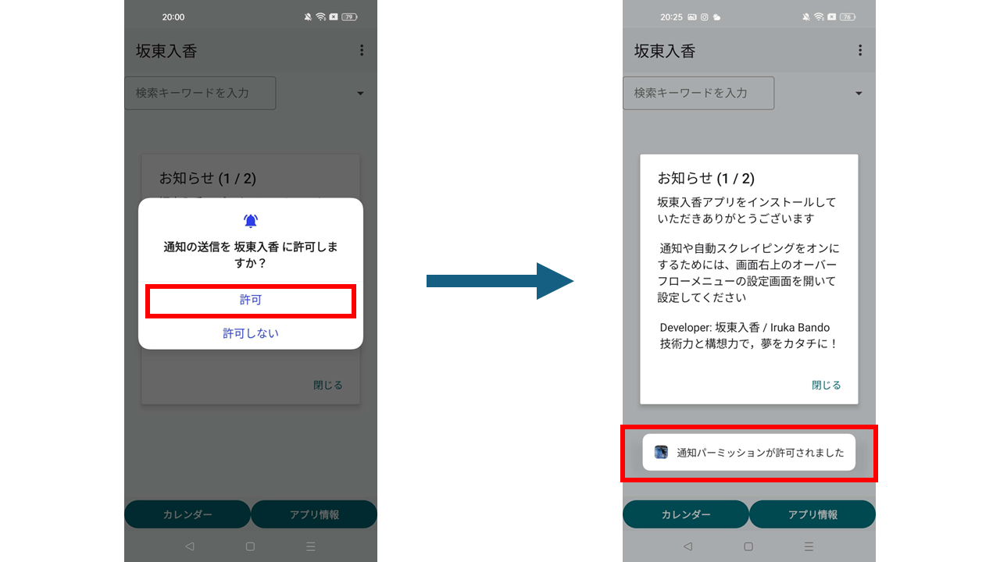
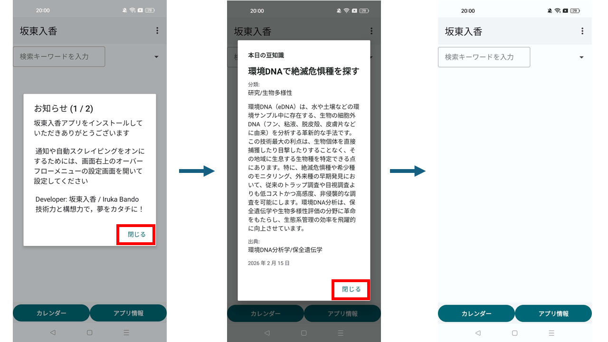
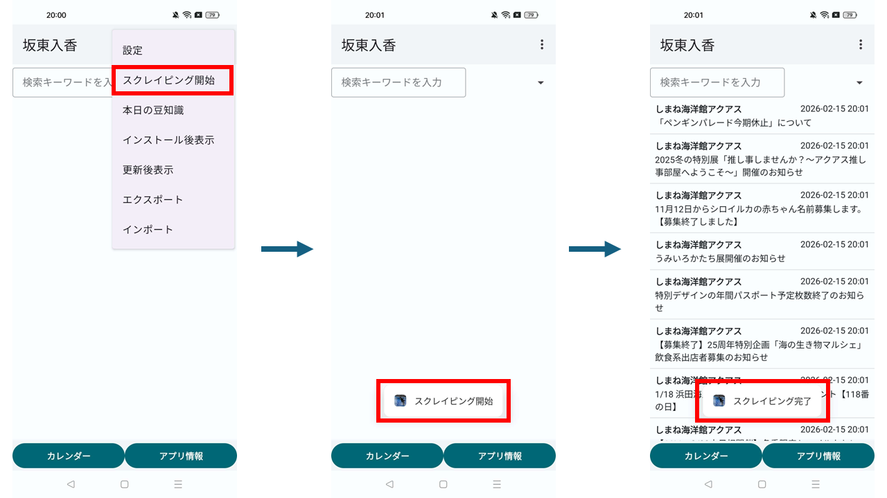
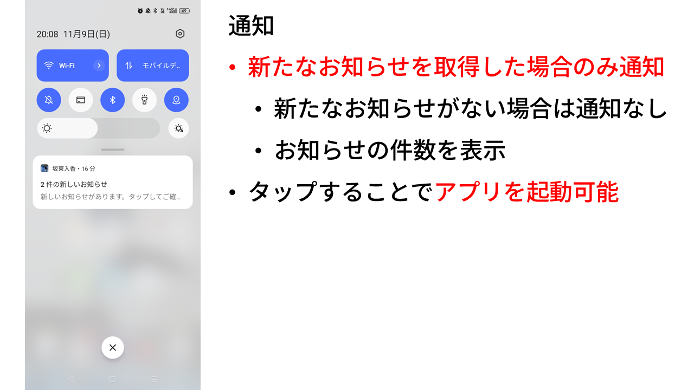
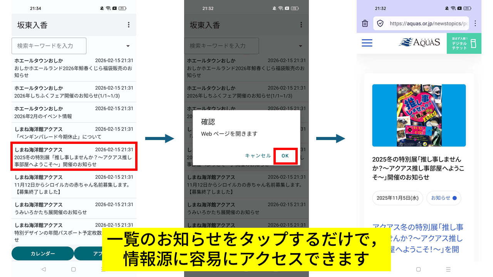
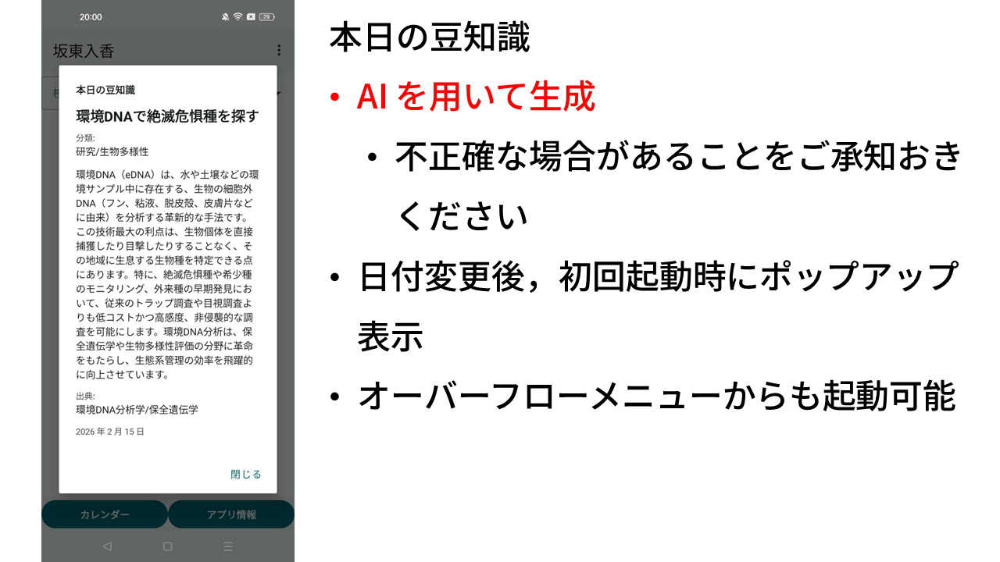

インストール
1. apk ファイルのダウンロード
以下のページのダウンロードに記載のリンクをクリックし，本アプリの最新版をダウンロードしてください。

2. ダウンロードした .apk ファイルの実行
ダウンロードしたファイルをファイルマネージャーなどで探し，タップし，iインストールを実行してください。
アプリのスキャンは任意で実行してください
アプリのインストールが成功した旨の通知が出れば，インストール完了です。
7. お問い合わせ
- irukabando [at] gmail.com
- X (@sendaiperson)
- Issues - GitHub
初期設定
1. 起動・通知の送信の許可
インストールした坂東入香アプリをアプリ一覧などから探し，起動してください。
名古屋港水族館で飼育してるシャチのリンのアイコンが目印です。
通知の送信を許可してください。新たなお知らせの通知の受信に必要です。
2. ポップアップの確認
ポップアップがいくつか表示されます（バージョンにより変わります）。確認の上，右下の「閉じる」をタップして閉じてください。
3. 初回起動時の設定
初期状態では，通知の送信および自動スクレイピングは実行されないため，有効化が必要です。
右上の「...」をタップし，オーバーフローメニューを表示させ，「設定」をタップしてください。
「通知を有効にする」をタップし，有効化してください。
「バックグラウンド処理の間隔」をタップし，処理間隔を選択してください。1時間程度で構いません。
バックグラウンド処理およびスクレイピングとは，「水族館の情報取得を行う処理」を示します。

基本的な使い方
1. 手動でスクレイピングを開始
オーバーフローメニューの「スクレイピング開始」をタップしてください。
2. 通知
3. メイン画面の使い方
便利で使いやすい情報検索の仕組みを提供します。

一覧のお知らせをタップするだけで，お知らせの情報源にアクセスできます。
4. 本日の豆知識
1日1つ豆知識を閲覧できます。豆知識は AI で生成しているため，誤りがある可能性があることをご承知おきください。
